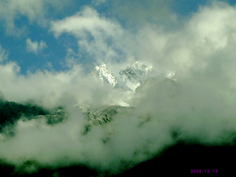
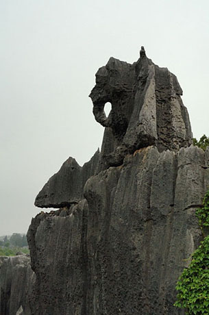
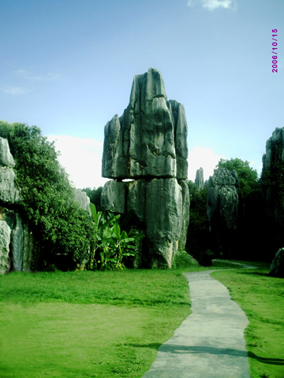
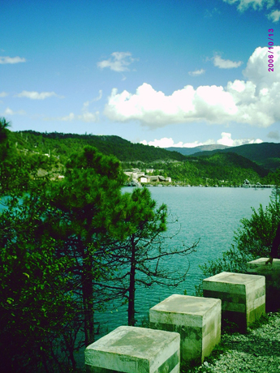
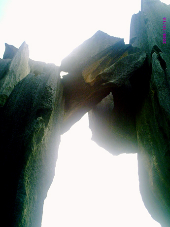

云南之旅8 去往玉龙雪山
#1 云南之旅8 去往玉龙雪山 作者：蓝天蓝 发表时间：2011-7-3 9:30:38
云南之旅8 去往玉龙雪山
时间2011.6.23.早上
昨天丽江导游就告诉了我们今天早上6:40准时出发去玉龙雪山，我们1077团的团友这次都很准时，没有一个迟到的，导游听满意的，就开始给我们讲了起来。
我们这个导游是纳西族人，对自己的民族感情自然很深了，他说你们要你的心，你们的灵魂去感受纳西族的文化。纳西族是信奉 东巴教的，纳西族人感情纯朴，平易近人，很好相处的。
我们会乘坐索道车去到云杉坪，这个云杉坪，是我们纳西族人为了爱情殉情的地方，凡是小夫妻到了云杉坪，最后拉着你爱人是手在云杉坪上面走完一圈，以示签证你们爱情的纯真。
传说年轻的男女在玉龙雪山脚下的云杉坪徇情的话，他们的灵魂就会进入玉龙第三国，在此殉情可摆脱世间烦恼，升入理想的爱情国度，得到永生的幸福。因此，云杉坪也成为一个浪漫而充满凄情的地方。
玉龙第三国是纳西族人世代景仰的圣地。这里是人间天堂的化身，是人们心目中向往的王国。在
东巴经
中曾写到：这是一个白云缭绕的
山国
，这儿有穿不完的绫罗绸缎，吃不完的鲜果珍品，喝不完的美酒甜奶，用不完的金沙银团，火红斑虎当乘骑，银角花鹿来耕耘，宽耳狐狸做猎犬，花尾
锦鸡
来报晓。”。
玉龙雪山是一个美丽绝伦的灵域净土，那儿有一对爱神情侣，女的叫游祖阿主，男的叫构土西古。他们骑着红虎和白鹿，弹着
口弦
吹着竹笛，率领着无数的飞禽走兽，在云和风中不停地呼唤着人世上悲苦难脱的有情人。相传痴心相爱的情人在那里将永世
不分离
，生命在那里将永远年青；那里没有蚊子苍蝇，没有如人世间那样的
恶语
毒语；那里晨雾流云为纱帐，绿草鲜花做地毯，日月星辰为明灯，五彩雉鸟当晨鸡，斑斓红虎当坐骑，琦角白鹿当耕牛，獐子
野驴
当
伴游
。
 
#2 Re:云南之旅8 去往玉龙雪山 作者：被感动的人 发表时间：2011-7-5 13:15:10
雪山冬天有雪没？记得俊G说青海的山上冬天积雪很厚，风吹来，雪末纷飞，想想就觉得美~
#3 Re:Re:云南之旅8 去往玉龙雪山 作者：蓝天蓝 发表时间：2011-7-5 14:23:25
引用：玉龙雪山长年积雪的，冬天积雪就更多了
原文由 被感动的人 发表于 2011-7-5 13:15:10 :雪山冬天有雪没？记得俊G说青海的山上冬天积雪很厚，风吹来，雪末纷飞，想想就觉得美~
#4 Re:Re:Re:云南之旅8 去往玉龙雪山 作者：死劲哭 发表时间：2011-7-9 16:20:17

又见雪山
#5 Re:Re:Re:Re:云南之旅8 去往玉龙雪山 作者：死劲哭 发表时间：2011-7-9 16:22:09

奇妙的大自然
［ 蓝天蓝 于 2011-7-9 16:32:03 时花20金币送鲜花一朵］
#6 Re:Re:Re:Re:Re:云南之旅8 去往玉龙雪山 作者：死劲哭 发表时间：2011-7-9 16:24:34

一夫当关
#7 Re:Re:Re:Re:云南之旅8 去往玉龙雪山 作者：死劲哭 发表时间：2011-7-9 16:26:51
绣球花
#8 Re:Re:Re:Re:Re:云南之旅8 去往玉龙雪山 作者：死劲哭 发表时间：2011-7-9 16:33:28

当时用的相机不是很好，再加上摄影技术欠佳，姐姐别见笑。丰富一下您的云南之旅
［ 蓝天蓝 于 2011-7-9 16:38:38 时花20金币送鲜花一朵］
#9 Re:云南之旅8 去往玉龙雪山 作者：隐藏菜系 发表时间：2011-7-9 16:36:47
图是好图，可是你把人家的风头给抢了。一口一个姐姐，人家也不好说你。建议你还是单独开贴吧，看着也方便。#10 Re:云南之旅8 去往玉龙雪山 作者：死劲哭 发表时间：2011-7-9 16:43:35
‘又见雪山’那张图，距离太远了，相机的广角变焦功能又弱，所以图像不够清晰。#11 Re:Re:云南之旅8 去往玉龙雪山 作者：死劲哭 发表时间：2011-7-9 16:49:50

千钧一发